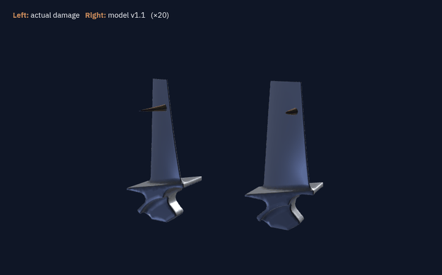

Enable hardware acceleration (Chrome: Settings → System → “Use graphics acceleration when available”) and reload, or see the results dashboard.
Step through how the method decides, on real test blades and its real outputs.